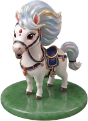
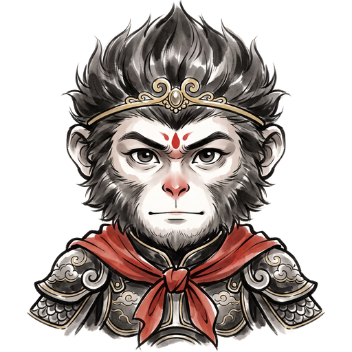
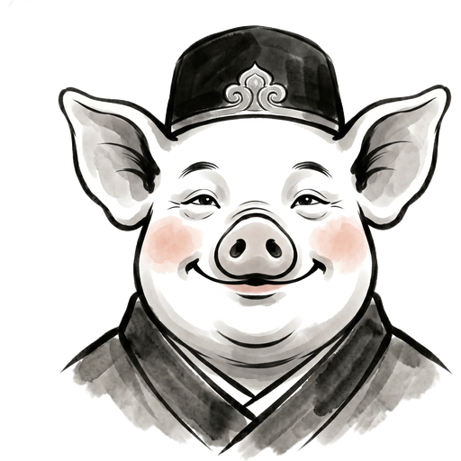
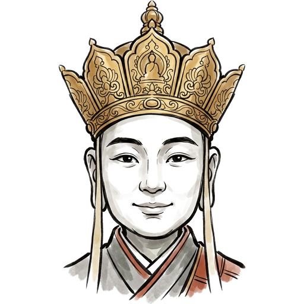
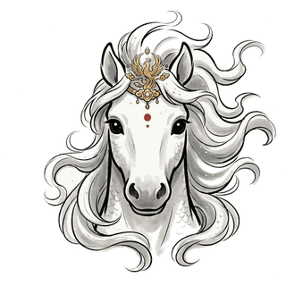
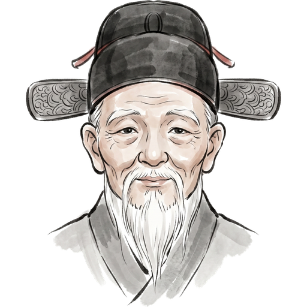
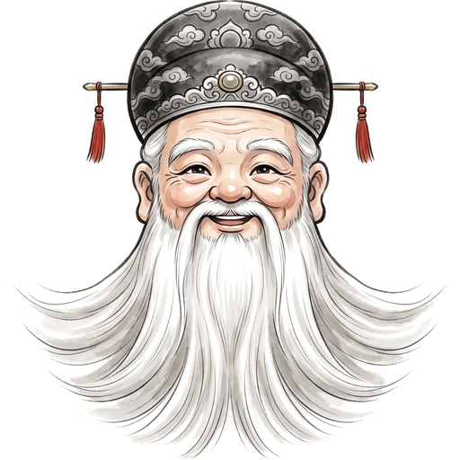
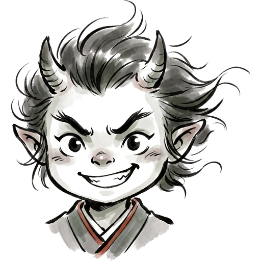
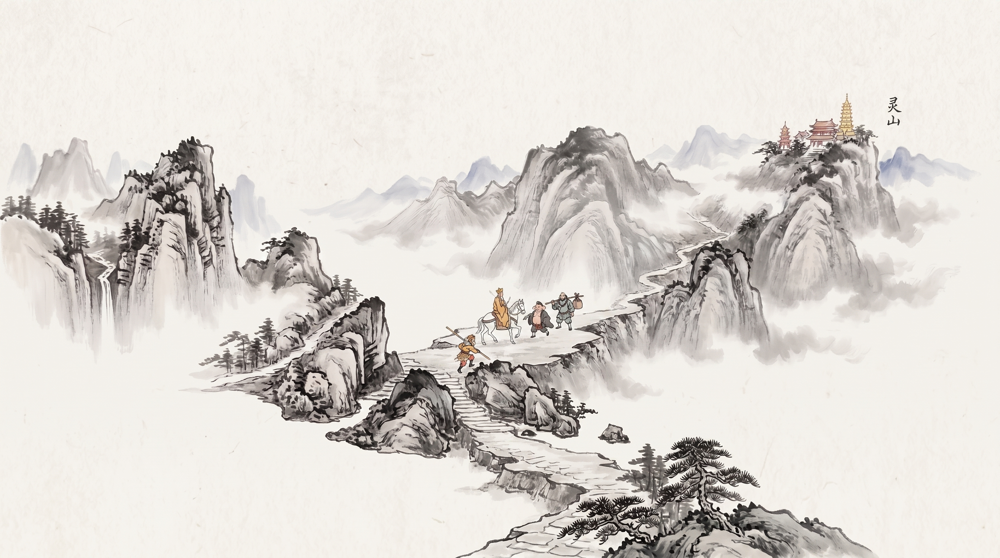
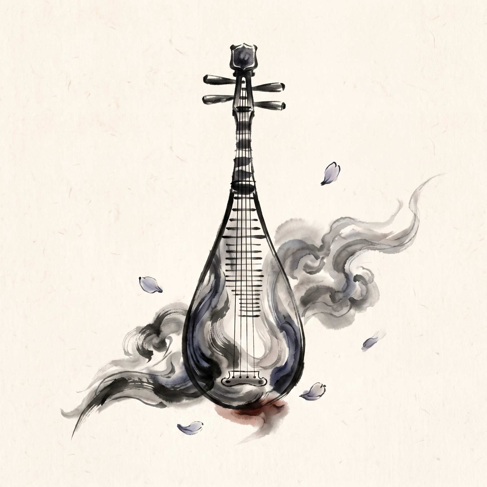

八位取经行者，各显神通
点击下方棋子，查看各行者的专属水墨立绘与绝技神通。

白龙马






一眼看破妖法，金箍棒横扫千军。自带对妖王战力加成，被直接攻击时强力还击，是西行路上一往无前的开路先锋。
【绝技】威震群妖
遭遇精怪与妖王时自动看破破绽，胜率天然拔高，绝不易在险关翻车。
【被动】一棒还击
遭受对手直接攻击法宝时自动反震，将袭击者击退 2 格。
西行通鉴 · 玩法与模式
从纯粹的竞速掷骰到 19 旋钮的深度自定，每一次西行都有截然不同的博弈风味。
🎲 见好就收，险中求胜
每回合前进后触发冲刺抉择：冲过安全点额外步数助你一飞冲天；冲砸了承受路途惩罚。终点前的最后冲刺，正是落后者的绝地反击机会！
👹 十大妖王拦路，各怀绝技
三道险关守关妖王随机降临！有的逼你掷小，有的只认中庸，有的平局占优。白骨精更会连变两重化身——输了？那就重整旗鼓再走一趟！
🌏 天涯若比邻，同桌各读母语
全面支持 18 种语言同桌畅玩！一键快速匹配全球玩家，或三两好友围坐一台电脑轮流掷骰，随时随地 1~8 人轻松开局，每个人读到的都是自己的母语。
⚙️ 十九个旋钮，打造专属房规
经典竞速、冲刺博弈、气势滚雪球、蓄气腾云，更有 19 个深度旋钮的自定义模式，内置地狱西行、闪电局、抽一签等现成风味！


一张泛黄磨破的棋盘纸
“一张画着西游记的简陋图纸，放学后几个小伙伴围坐在桌前丢骰子，从第 1 格一路抢跑到第 100 格。路上有冷不丁跳出来的妖精一把将你打回原地，有驾着筋斗云腾空飞跃十几格的欢呼，也有被小鬼缠住动弹不得的懊恼。”
当年那张泛黄磨破的棋盘纸早已不知所踪，但围着桌子丢骰子的那种纯粹的快乐，却在我的记忆里留了一辈子。很多年后，我凭着这份念想，把它亲手做成了电子游戏。